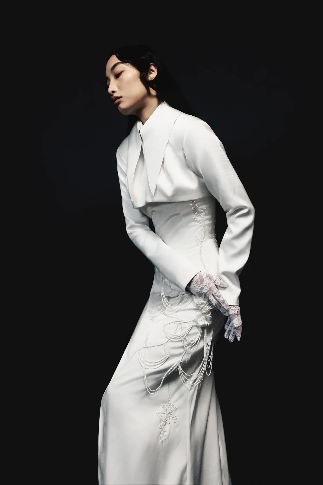
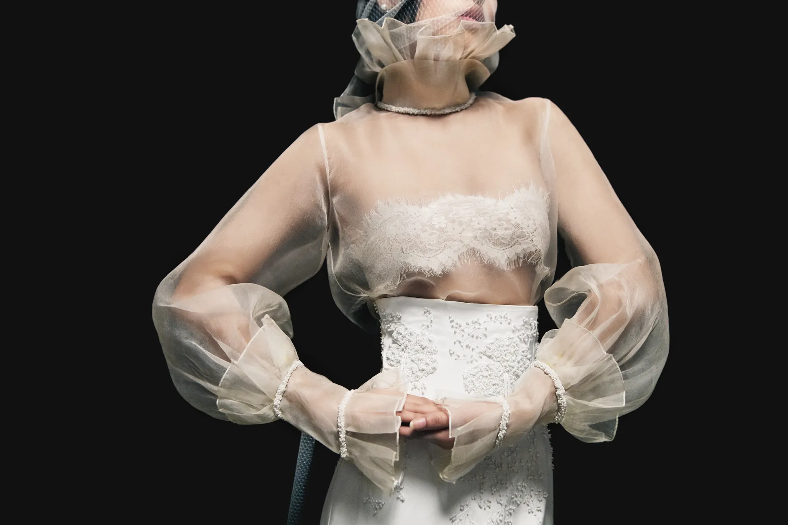

Withnanai & Akimugha Yeptho
Bridal Couture

Designed to look timeless forever with grace.

Our Craft
DiscoverWithnanai & Akimugha Yeptho is a Bridal couture Label established in 2026 by Angela Lalramtiami and Akimugha Yeptho Delhi based designer, The brand focuses on Sublimity, Story telling, Craftsmanship and the intricacy of dressmaking. Up to the present time, they have worked with numerous brides for various custom-made bridal dresses, along with their work been seen on the Digital Cover of Vogue India Sept issue, and published in various Fashion magazines and fashion platforms.
Made to Measure Bridal Couture